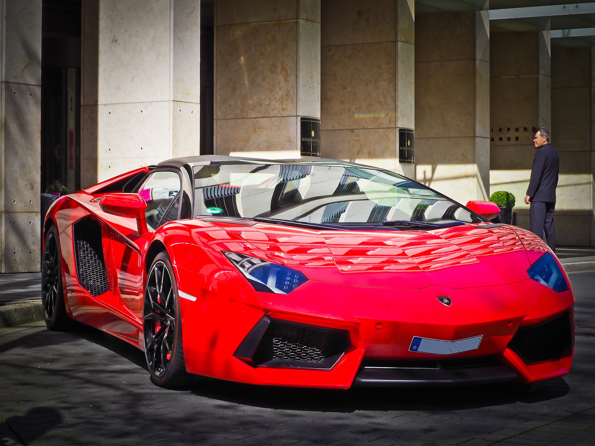

LAMBORGHINI G7
A super-sports car created with a singular purpose, the Huracán STO delivers all the feel and technology of a genuine race car in a road-legal model. Lamborghini’s years-long motorsport know-how, intensified by a winning heritage, is concentrated in the new Huracán STO. Its extreme aerodynamics, track-honed handling dynamics, lightweight contents and the highest-performing V10 engine to date come together, ready to trigger all the emotions of the racetrack in your everyday life.

AUDI A4-SEDAN
The Audi A4 Sedan comes with a new 2.0L TFSI engine that generates 140 kW (190 hp) and propels from 0 - 100 kmph in 7.3 seconds. Mated to a 7 speed S-tronic transmission, the Audi A4 is sure to offer you an exhilarating drive